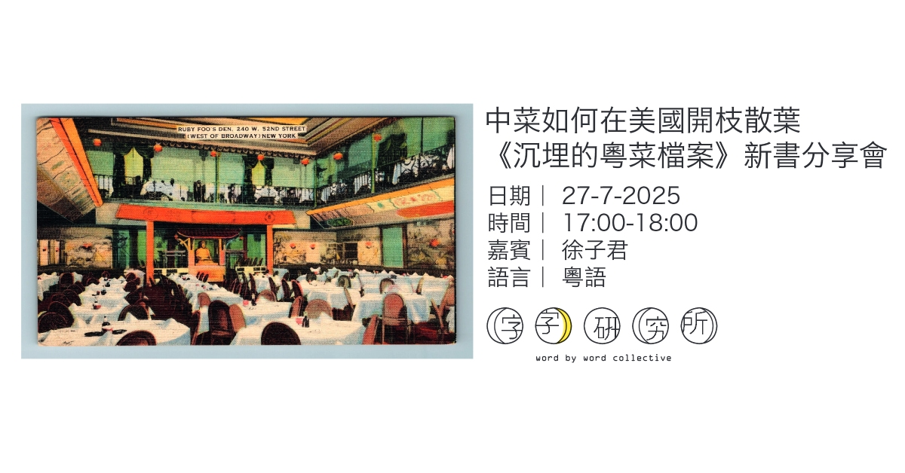

In the 1940s, Chu Poin quietly recorded over 600 Cantonese recipes while working in New York at iconic restaurants like Lum Fong and Ruby Foo’s. Decades later, his handwritten notes were discovered by his grandson, opening a new window into the untold history of Chinese American food.
Among the 645 recipes are dishes like “Plum Blossoms Competing in Beauty,” “Golden Flowers Heralding Joy,” “Immortal Cranes Add Longevity,” and “Phoenix and Swallow Hidden Treasures.” The manuscript is organized into 18 sections: soups, shark fin, duck, chicken, pigeon, double-boiled dishes, abalone and snails, sea cucumber, fish, fried rolls, casseroles, tofu, stir-fried dishes, sweet and sour, noodles, vegetarian dishes, sweet soups, and sweet and savory dim sum.
This book combines biography, culinary history, and family archive. Through a rare recipe manuscript, it tells the story of a Chinese American family while also tracing how Cantonese cuisine became deeply embedded in American life. The Buried Archive of Cantonese American Cooking will be released in bookstores across Hong Kong in July 2025.

July 27, 2025 – 5:00–6:00pmIn the 1930s, Chinese restaurants in America rivaled their counterparts in Hong Kong. Some dishes that have vanished from Hong Kong’s tables survived abroad. Starting with a family cookbook from the 1930s, this project spans Hong Kong, Xinhui, and New York, tracing a story of Cantonese food across generations.
Presented by: Type Research Institute
Speaker: Kristie Chow
Moderator: Lui Ka Chun

Kristie Chow is a creative producer and public historian. She is the creator of the YouTube channel The American Chinese Food Show and works across documentary, writing, and exhibitions to explore the stories, spaces, and legacies behind Chinese restaurants in America. Her career has spanned journalism and tech, and she is a graduate of UC Berkeley, where she studied art and history.
Email